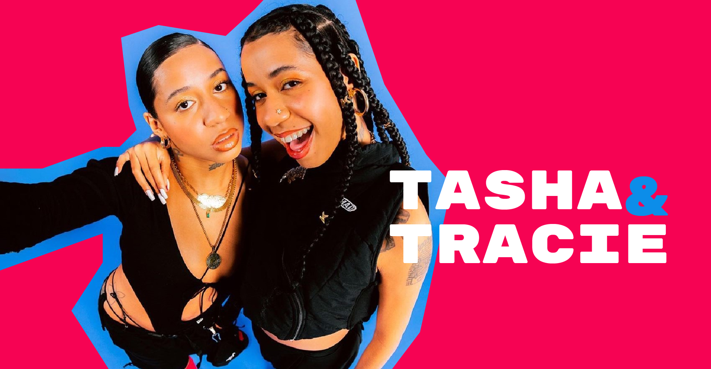
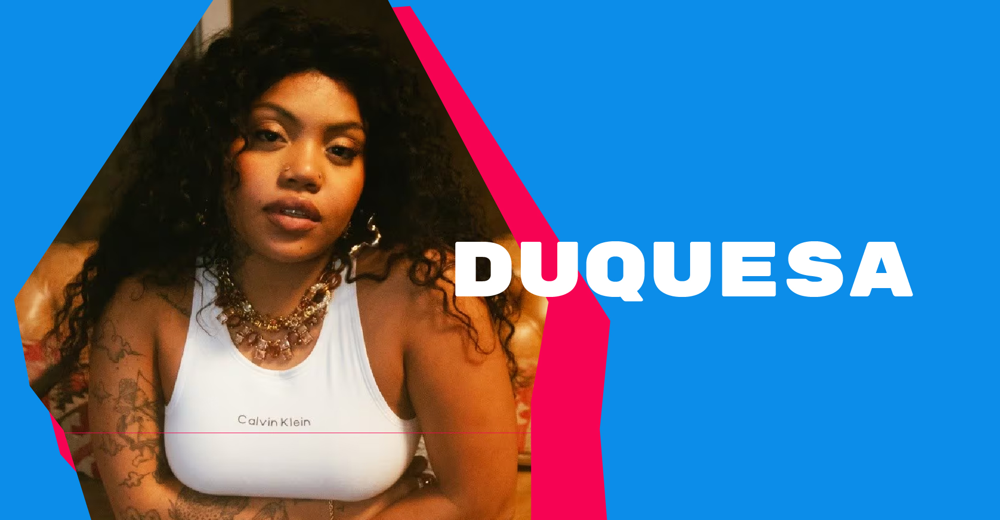
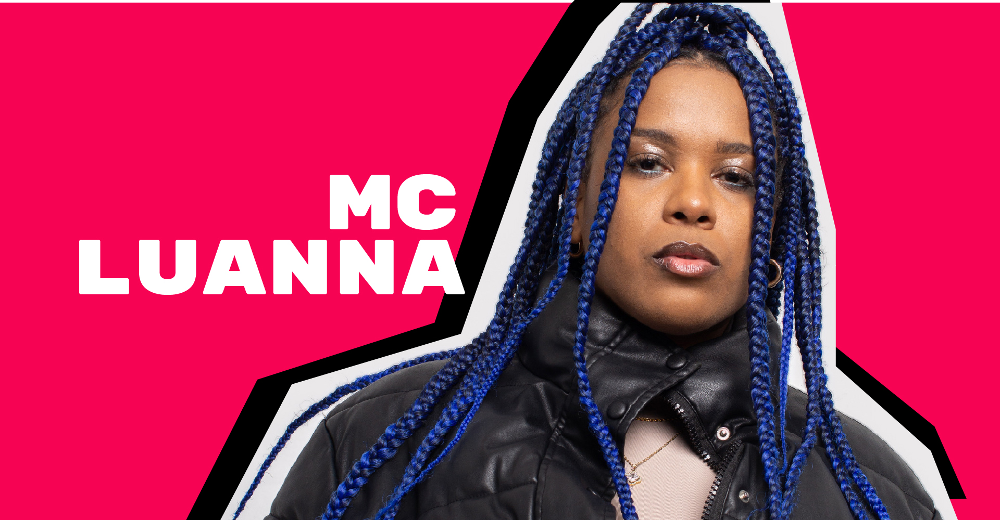
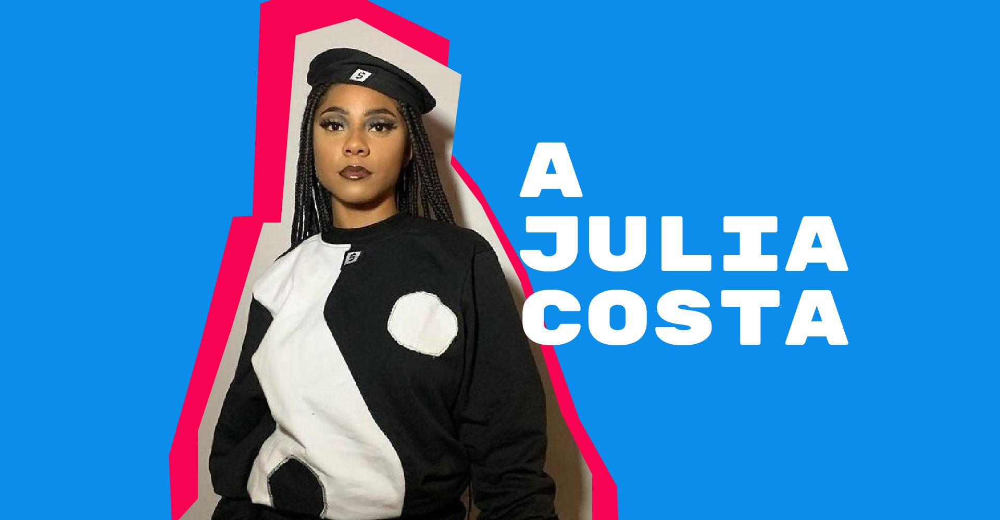

>Tasha & Tracie

Tasha Okereke e Tracie Okereke, Tasha Okereke e Tracie Okereke cresceram no Jardim Peri, na Zona Norte de São Paulo, atuam na arte, moda, ativismo e música. Em janeiro de 2014 aos 17 anos criaram o blog "Expensive $hit". Sem internet em casa, elas usaram o computador de um tio para começar. Para subir os arquivos, usavam lan houses e casas de amigos. No blog falavam sobre moda a partir de uma perspectiva periférica visando a valorização da autoestima e da autonomia dos jovens negros, por meio de conhecimento, arte, moda e informação. Em 2020 lançaram a canção "Tang" em parceria com o rapper Kyan, que mais tarde viralizou na rede social TikTok. Ao longo de 2020 lançaram as canções "Pouco", "Agouro" e "Salve", ocupando cada vez mais espaço no cenário musical.
>Duquesa

Jeysa Ribeiro nasceu no dia 1 de maio de 2000 no interior do estado da Bahia na cidade de Feira de Santana, começou sua carreira musical artística em 2015 com participações nas músicas "Só Guardei Pra Mim"do grupo baiano Sincronia Primordial. Com produções que transitam do R&B ao trap, Duquesa lançou em 2019 alguns trabalhos como o single "Diz" e, participações nos discos da cantora Ju Moraes "Eu Quero Você" (2019) e do rapper Rincon Sapiência "Amor e Calor" (2019).[9] Depois de fazer apresentações nos circuitos alternativos do Carnaval de Salvador em 2020, a cantora prepara novos lançamentos pela Produtora Boogie Naipe ao longo deste ano ainda. Em 2017, Jeysa lançou seu primeiro álbum de estreia com produção de João Rafael Ferreira, Claudio Tavares e Henrique Portovedo.
>Mc Luanna

Luanna Santos Oliveira, mais conhecida como MC Luanna, é Baiana, moradora do Jardim Boa Vista, zona oeste de São Paulo, desde criança. Compositora, ela investe na carreira de rapper desde 2020. Já fez curso técnico de saúde bucal e começou a trabalhar com odontologia aos 18 anos. Ela apostou na carreira de cantora ao ver o sucesso do amigo Dfideliz, nome artístico de Felipe Micaela. “No começo tinha essa ideia de compor letras e vender, ser compositora porque cantar não era para mim. Mas aí não tinha como, acho que só eu conseguia colocar verdade na minha letra, naquilo que eu queria passar. Então, decidi fazer um teste (cantando)” - MC Luanna, ao site da produtora KondZilla MC Luanna possui mais de 1,6 milhão de ouvintes mensais no Spotify. O single "Kit Rosa" (2020) e o álbum "Maldita" (2022) estão entre os principais álbuns da sua carreira.
>Júlia Costa

Julia Costa, conhecida como AJULIACOSTA vive para o rap. Nascida em Mogi das Cruzes, município da região metropolitana de São Paulo, a artista viu no hip hop uma forma de se encontrar como pessoa e profissional. Passando por expressões da cultura desde jovem, como a arte de rua, a moda e a música, foi com roupas autênticas e letras vorazes que AJU firmou seu espaço e hoje mantém sua marca de roupa feminina, a AJC$hop, e se destaca como um dos nomes mais quentes da cena. Mas a música chegou antes da moda. Incentivada pelas surpresas que uma programação de rádio pode proporcionar, Júlia Roberta conta que era dessa forma que costumava consumir música. “Eu até comprei um rádio recentemente, para ficar escutando na minha casa. É muito bom, você não escolhe a próxima música e você não faz a mínima ideia, é tipo um set na sua casa”. Além dos sons recebidos pelas ondas radiofônicas, ela conta que costumava ouvir samba, pagode, rap e funk.